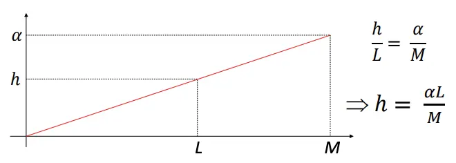

符号定义

- m：总检验假设数
- m0：零假设正确的数量，我们无法得知
- m - m0：备择假设正确的数量
- V：假阳性结论数量
- S：真阳性数量
- T：假阴性数量
- U：真阴性数量
- R = V + S：拒绝零假设数量
在m个假设检验中，m0个零假设为真，R是观察到的显著情况的随机变量，S、T、U、V都是不可观测的随机变量。
FWER(Family-wise error rate)
代表一系列检验中，至少存在一个假阳性的概率： \[FWER = P_r(V >= 1)\]
控制过程
无论检验间是否独立的，\(\alpha \leq m * \alpha_{sub}\)都成立。
利用这个不等式，可以通过Bonferroni correction、Holm–Bonferroni method来对FWER进行控制。
缺点
由于FWER限制过于严格，会导致power相对比较低，容易错失正确的决策机会。
例如当两个比较是完全相关，多次比较并不会增加假阳性水平，但是矫正后却增加了假阴性。
FDR(False discovery rate)
控制显著中的假阳性错误的比例期望： \[Q = V / R\] \[FDR = Q_E = E[Q] = E[V/R|R>0]*P(R > 0)\]
控制过程
最常见的是BH过程。
Benjamini–Hochberg procedure(BH step-up procedure)
- 将多重比较的P值排序，找到满足\(P_{(k)} \leq \frac{k}{m} {\alpha}\) 的最大的\(k\)；
- 拒绝1 ~ k对应的原假设。
检验间独立或者正相关情况下，HB过程控制结果满足： \[E(Q) \leq \frac{m_0}{m}\alpha \leq \alpha \]
如何理解？

- 设共有\(M\)个假设，\(M_0\)个零假设为真，它们的P值为均匀分布，显著水平为\(h\)，则期望的假阳性数量为\(h * M_0\);
- 红线的斜率为\(\alpha / M\)，红线下方最大的P值对应的序号为\(L\)；
- 拒绝零假设中，期望的假阳性数为\(h * M_0 = M_0\frac{\alpha * L}{M}\)，因此: $FDR = / M $
HB过程在每次比较独立或者正相关时是有效的。
Benjamini–Yekutieli procedure
此过程在任意情况下，都能控制假阳性。方式为在BH过程中，引入参数c，找到最大\(k\)满足\(P_{(k)} \le \frac{k}{m * {c(m)}}\alpha\)。 - 如果检验间独立或者正相关，\(c(m) = 1\)； - 其他情况，\(c(m) = \sum _{i=1}^{m}\frac{1}{i}\)。
缺点
相对于FWER，有较高的假阳性率。
FCR(False coverage rate)
错误覆盖率。FWER、FDR用于控制P值，FCR用于控制置信区间。
控制过程
BH过程对应的置信区间修正
- 将多重比较的P值排序，找到满足\(P_{(k)} \leq \frac{k}{m} {\alpha}\) 的最大的\(k\)；
- 拒绝1 ~ k对应的原假设；
- 为每个比较中的参数，构建 \(1 - \frac{k}{m} {\alpha}\) 水平的置信区间。
总结
需要根据不同情况，选择适合自己的标准与方法。
目的明确，决策指标明确，测试干预是否有效，也许FWER来进行控制比较合适；探索性实验，指标很多的情况下，可能FDR会更适合。